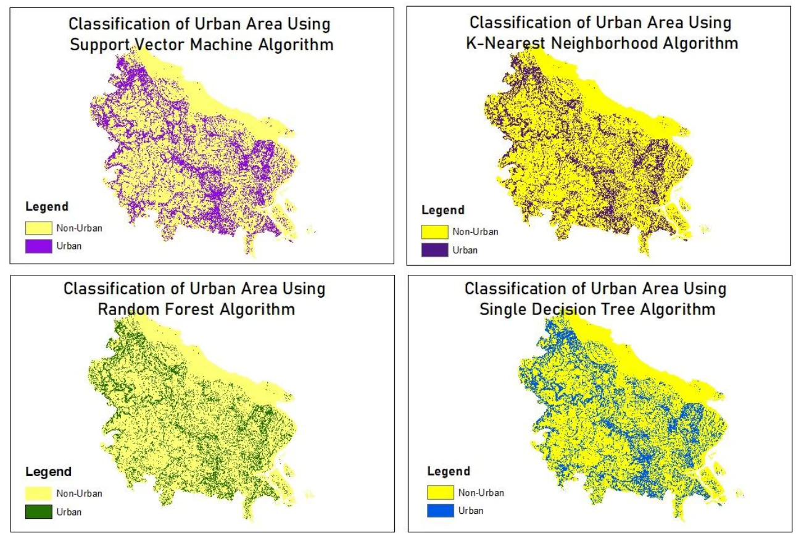
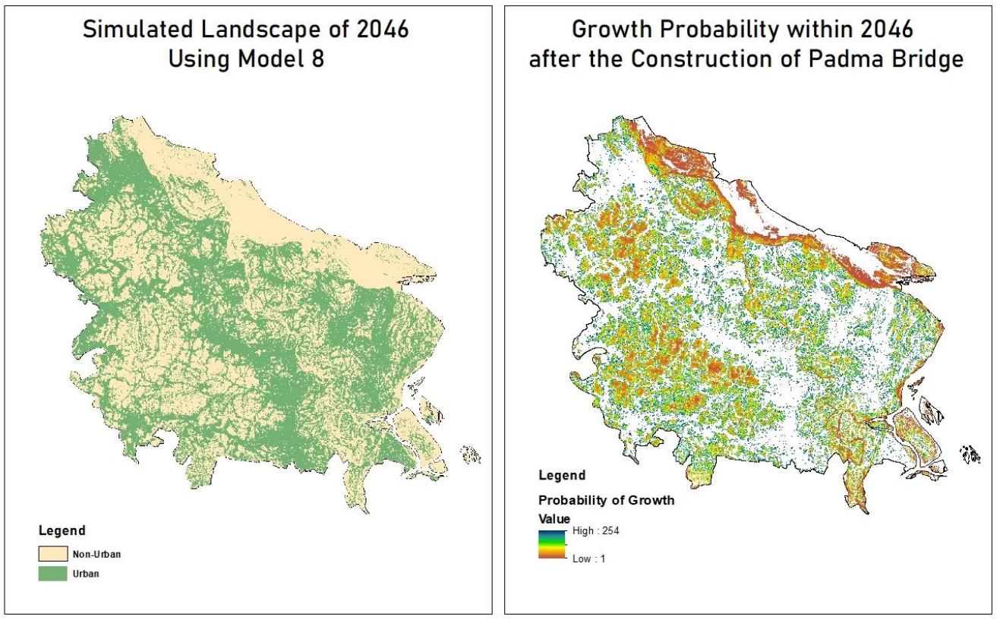
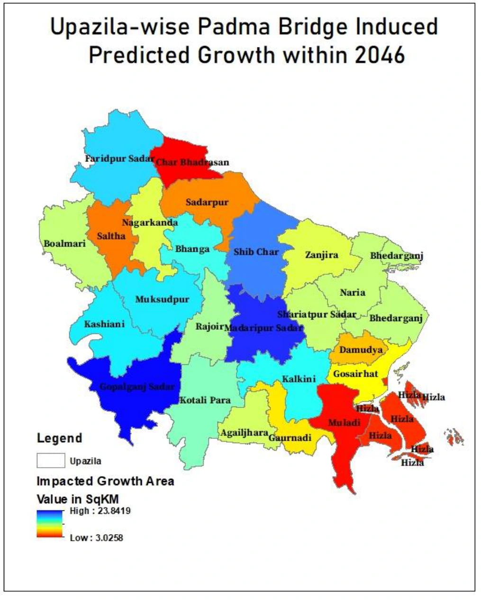

Research question
How might fixed road connectivity change the pattern of urban development south of the Padma Bridge? The study compared historical land-use change near the Jamuna Bridge before and after its opening, then adapted those patterns to the different geography and development conditions around the Padma Bridge. The Padma study area covered southern upazilas within roughly 50 km of the bridge.
Data and land classification
I worked with four Landsat scenes from the Padma region (2010–2022) and six from the Jamuna region (1992–2022). I prepared training data to distinguish built-up and non-built-up land and compared Support Vector Machine, k-Nearest Neighbours, Random Forest and a single decision tree on the classification task. Random Forest performed best in the thesis comparison and was used for the subsequent land-cover series.

The growth model used road categories and junction proximity, elevation, hillshade and a constraint layer. Road information came from LGED and OpenStreetMap; terrain variables came from SRTM and ALOS sources. The thirteen predictors are documented in the dissertation's Table 3.2.
Growth modelling
Using the classified land-cover maps, I estimated land-transition probabilities with a Markov model and calculated local development suitability through weights of evidence. I then ran Cellular Automata simulations in Dinamica EGO using patch and expander functions. The Jamuna-based model was adjusted for differences between the two bridge regions before being applied to the Padma scenarios.

Results and mapped scenarios
The alternative scenarios indicated uneven pressure on future development. Gopalganj Sadar, Madaripur Sadar and Shibchar were among the areas with the strongest projected response. These are simulated outcomes, not built-up land observed after the bridge opened.

Interpretation and limitations
The 317 km² figure is a conditional scenario result. It depends on the assumption that the Padma Bridge produces a broadly comparable land-development response to the Jamuna Bridge after adjustments for local conditions. The original thesis also notes that some socioeconomic drivers could not be consistently included across the historical periods. Classification uncertainty and the limits of analogue modelling mean the outputs should guide planning questions, not be treated as a measured causal effect or precise forecast.
Rifat Hossain Talukder (2023). Predicting the Influence of the Padma Bridge on Future Urban Growth. Bachelor of Urban and Rural Planning dissertation, Urban and Rural Planning Discipline, Khulna University. Supervised by Prof. Dr. Md. Ahsanul Kabir.